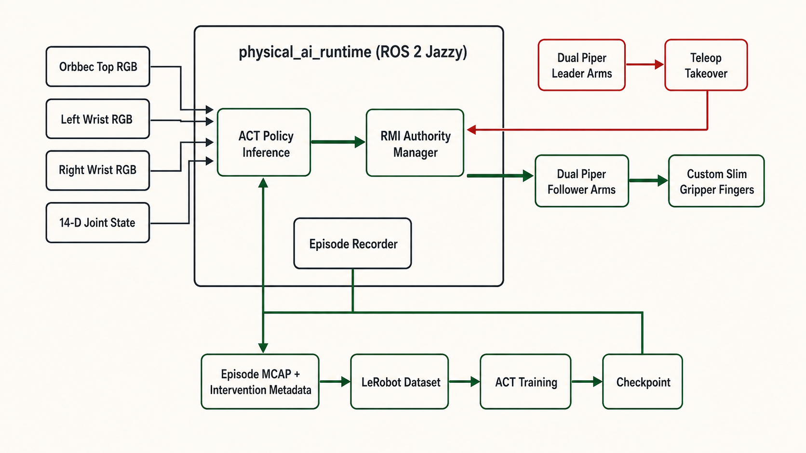
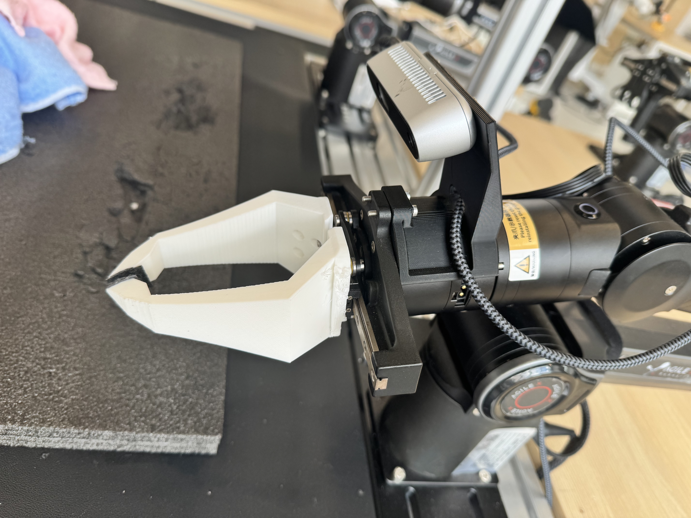
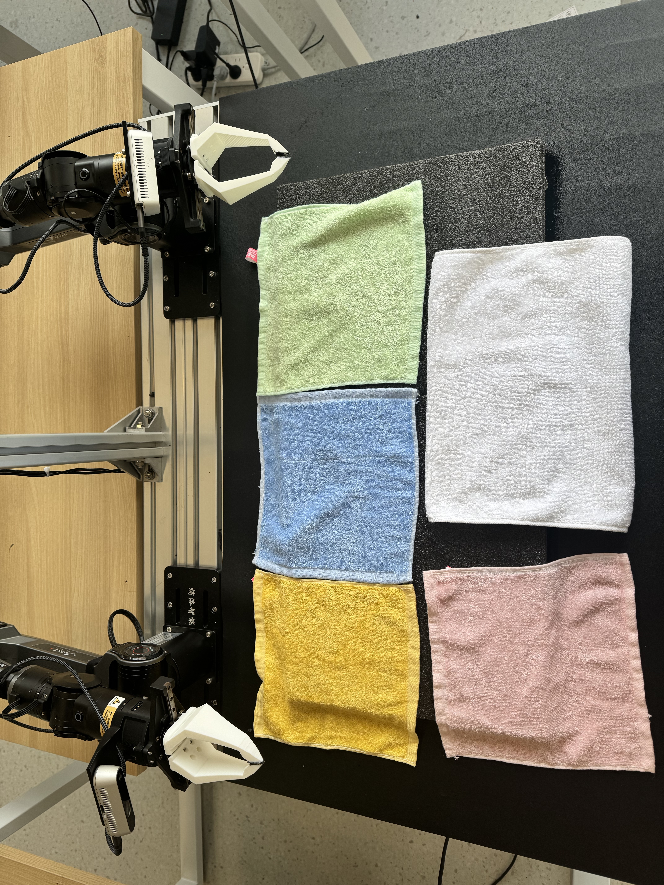

学习前置技能
使用 100 条蓝色方巾直接角点抓取示范，将 base20k 训练 20k steps。
一套面向精确角点抓取与完整毛巾折叠的分阶段学习流程，部署于两台 Piper 机械臂。 最终策略在五种随机摆放的测试毛巾上取得 35/50 的成功率。
static/videos/finetune10k.mp4
微调策略独立完成一次完整折叠；测试前毛巾被随机放置。
项目概述
仅依赖少量成功示范很难学会精细的布料操作：策略可能能够接近毛巾，却仍会错过稳定双臂抓取所需的角点。为此，我们采用分阶段训练方法。首先使用蓝色方巾的 100 条直接角点抓取示范训练 ACT 策略；随后将策略部署到真实机器人上，当夹爪偏离或即将抓空时，由操作员接管并完成后续任务。该过程在红色与绿色毛巾上获得 101 条完整任务轨迹。基于角点抓取检查点继续微调，在五种毛巾、共 50 次随机摆放测试中取得 70% 的完整任务成功率；作为对照，预训练策略为 26%，使用相同 HIL 数据从头训练的策略为 20%。结果表明，在本系统中，保留已有角点抓取能力并利用纠正式 HIL 数据继续微调，是比从头训练更有效的路径；位置鲁棒性与跨实例泛化仍有提升空间。
系统
physical_ai_runtime 连接相机、策略、RMI 控权层、双臂控制与轨迹记录模块。同一套运行时既负责自主评估，也负责 HIL 数据采集时向主臂遥操作切换控制权。

static/images/runtime_architecture.pngstatic/videos/three_camera_inputs.mp4
static/images/slim_gripper.jpg定制手指属于最终硬件配置，但本阶段没有进行夹爪消融实验，因此不单独声称其带来了多少性能增益。
方法
使用 100 条蓝色方巾直接角点抓取示范，将 base20k 训练 20k steps。
在真实机器人上运行策略。偏移与临界抓空状态由策略实际运行产生，而非预先编排。
操作员通过两台主臂接管，恢复抓取并继续完成抬升与折叠，共采集 101 条 HIL 轨迹。
从 base20k 继续进行 10k steps 的 HIL 微调，并与使用相同 HIL 数据训练 20k steps 的从头训练模型对比。
static/videos/pretraining_teleop.mp4static/videos/policy_hil_takeover.mp4实验结果
每个模型测试 50 次：五种毛巾各 10 次，每次运行前均随机放置毛巾，不采用固定布局。
| 毛巾 | 训练阶段是否见过 | 预训练 20k | 从头训练 20k | 微调 10k |
|---|---|---|---|---|
| 蓝色方巾 | 预训练 | 5 / 10 | 0 / 10 | 8 / 10 |
| 绿色方巾 | HIL | 3 / 10 | 2 / 10 | 9 / 10 |
| 红色方巾 | HIL | 2 / 10 | 3 / 10 | 8 / 10 |
| 黄色方巾 | 未见 | 1 / 10 | 2 / 10 | 6 / 10 |
| 白色长方巾 | 颜色、实例与形状均未见 | 2 / 10 | 3 / 10 | 4 / 10 |

static/images/towel_set.jpg定性展示
以下完整运行用于对比角点抓取检查点与微调后的全任务策略。从头训练模型的成功率较低，因此只保留在定量结果中，不再额外设置展示视频。
static/videos/base20k.mp4static/videos/finetune10k.mp4实验边界
在上述边界内，实验结论是明确的：先保留角点抓取这一前置技能，再使用纠正式完整任务轨迹进行微调，明显优于本阶段设置的两种对照方法。